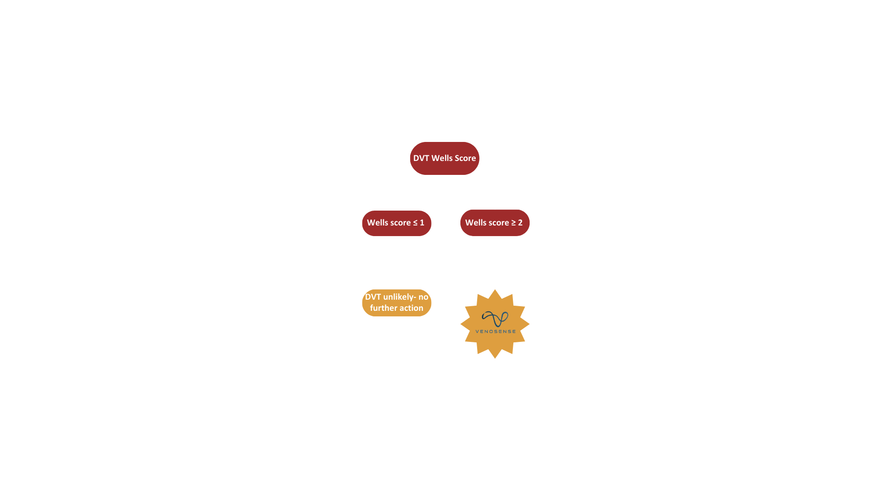

Welcome to VenoSense
VenoSense is an innovative, automated ultrasound system designed to detect deep vein thrombosis (DVT) early and efficiently using advanced non‐invasive ultrasound technology combined with AI-driven image analysis.
Our Technology
Our system employs a Doppler‐based automated probe on a motorized platform with a secure clamp mechanism to capture high-quality images. Real‐time processing with machine learning distinguishes critical vascular features.

Workflow & Scores
See how VenoSense streamlines diagnostics with automated scoring and assessment.
Risk Factors
VenoSense evaluates key risk factors to identify patients at high risk for DVT.

Competition & Advantage
Our advanced technology stands out by addressing diagnostic challenges and lowering costs while improving outcomes.

Meet the Team
Our multidisciplinary team includes: Justus Brown (Software Engineering), Cynthia Sainz (Computer Aided and Experimental Design), and Kirandip Walia (Clinical Research).
Contact Us
Email us at: contact@venosense.com